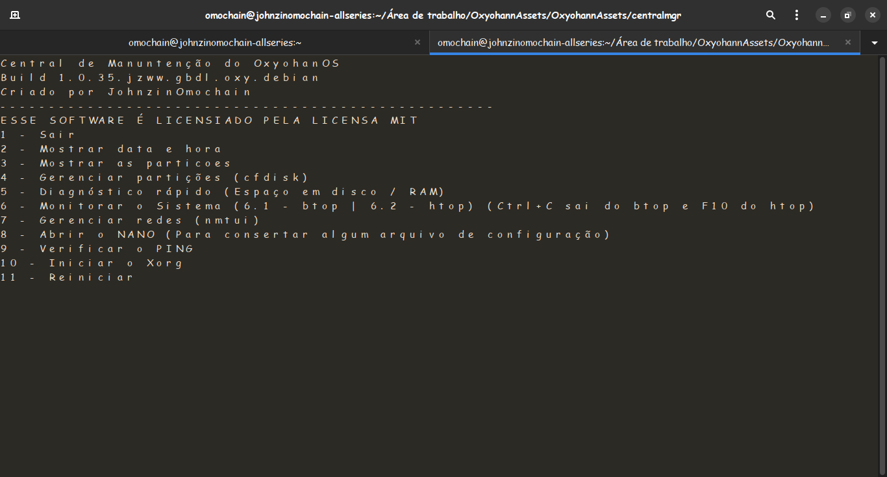

É um software do OxyohanOS que é basicamnete uma central de controle e manuntenção que possibilita gerenciar processos, discos, partições, redes e desempenho através de uma central só (tipo o Ctrl+Alt+Del do Ruindows) através de input's simples e faceis de decorar.

Print rodando em um Arch Linux (Antes de ser compillado)
Feito INTEIRAMENTE em Python e funcionando com um backend com as biblhotecas
subprocess, os, time e datatime. Foi feito via terminal para caso a interfaçe quebre
pelo menos o terminal ter essa ferramenta para consertar ou controlar
a situação. Também precisa de dependencias: (btop, htop, nmtui, cfdisk, python3 e pip)